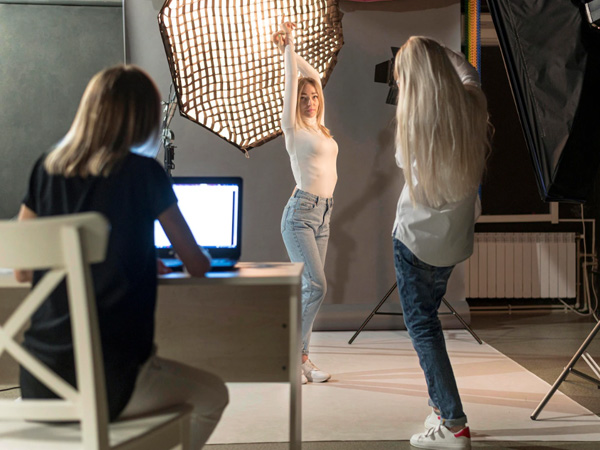

Consejos para mi primera sesión de fotos
Es importante para nosotros que tengas una buena primera sesión fotográfica, por eso te recomendamos lo siguiente...
Consejo 1. Duerme bien la noche anterior
Sabemos que es tentador quedarse en el evento de networking para tomar una copa más. O ver solo un episodio más en Netflix. Todos sabemos que conseguir una o dos horas extra hará una diferencia considerable al día siguiente. Si te sientes relajado y positivo, lucirás así para la sesión de fotos. Esto también ayudará a reducir las bolsas debajo de los ojos y, en general, hará que luzca más radiante.
Consejo 2. ¿Qué ponerse?
Las personas pueden no estar seguras de qué ponerse para una sesión de fotos profesional. Siempre sugerimos que use lo que normalmente usa cuando se encuentra con un cliente potencial. A pesar de que un tiro a la cabeza es solo de cabeza y hombros, en la foto se verá si usa una camisa sin planchar o una camiseta desaliñada. Si usualmente usa anteojos, decida si le gustaría usarlos en su retrato. Si no los va a usar, o no está seguro, quíteselos unos 15 minutos antes. Esto dará tiempo suficiente para que desaparezcan las marcas rojas de la nariz. Si usa maquillaje, no se sienta tentado a aplicar demasiado. Esta debería ser una representación bastante natural de ti mismo. Si normalmente eliges un lápiz labial de color llamativo, ¡adelante!
Nuestro consejo sería, en general, mantenerse alejado de las tendencias, ya sean elecciones de moda o peinados. La foto o el retrato debe durar al menos dos años. Nada lo hará más rápido que usar algo que estuvo de moda durante una sola temporada.
Consejo 3. ¿Cómo posar?
Coloque su cuerpo en un ángulo de 45º con respecto a la cámara y la cabeza vuelta hacia el fotógrafo. No se preocupe si esto no tiene mucho sentido ahora, un fotógrafo profesional de disparos en la cabeza podrá guiarlo durante la sesión.
Mantén tu espalda recta. Imagina que un fisioterapeuta está tomando la fotografía. Una mala postura puede provocar falta de confianza. A través de una lente, la forma en que te abrazas refleja cuán seguro te ves, así que mantente erguido y seguro de ti mismo. Vea la charla TED de Amy Cuddy sobre este tema, «Tu lenguaje corporal puede moldear quién eres».
Deje que sus manos caigan a los lados o colóquelas en sus bolsillos. No hacer nada con las manos puede parecer extraño en ese momento, pero se ve mucho más extraño en la cámara cuando alguien tiene las manos detrás de la espalda. Su fotógrafo lo guiará en esta área, especialmente si la imagen es un retrato e incluirá sus manos o todo el cuerpo.
Empujar levemente la barbilla separará la cara del cuello y el cuerpo y definirá la línea de la mandíbula. Para hacerlo bien, imagina que tienes una toronja entre la barbilla y el pecho. Es posible que su fotógrafo le pida que levante la barbilla o la cabeza ligeramente, esto no se debe a que tenga papada, es para asegurarse de que la luz llegue a su cara en los lugares correctos.
Consejo 4. Trabaja un tu mejor lado
Mucha gente es consciente de tener un ‘mejor lado’. Esto puede deberse a la forma o simetría de su rostro, o incluso a intentar ocultar una imperfección percibida. No se avergüence de decirle esto a su fotógrafo, trabajarán con usted para obtener los mejores resultados. Todo el mundo, de hecho, tiene un ojo más grande que el otro. Al girar el cuerpo y la cabeza a un ángulo de 45º, colocar el ojo más grande lo más lejos posible ayudará a nivelar la diferencia de tamaño. No siempre es fácil saberlo cuando te miras a ti mismo o a otra persona, por lo que para la mayoría de nuestros clientes, tomamos fotografías en ambos ángulos para que nuestros clientes puedan elegir más adelante.
Consejo 5. Mirarse en un espejo
Ensaya tus expresiones faciales. Todos prefieren la forma en que se ven con cierta expresión. Una sonrisa completa o media puede funcionar bien para un emprendedor joven y apasionado. Alternativamente, un director ejecutivo o un miembro de la junta en una industria profesional puede sentir que una expresión neutral comunica fortaleza.
Al posar, intente entrecerrar los ojos muy ligeramente. Algunos fotógrafos lo llaman «estrabismo». Esto puede ayudarte a recordarlo ese día. Una mezcla entre estrabismo y pellizco. Cuando alguien se siente incómodo cuando le toman una foto, puede reaccionar con ojos anormalmente abiertos. Piense en un ciervo con luces delanteras, eso es lo que estamos tratando de evitar.
Consejo 6. Relajarse
Relájese y deje que el fotógrafo dirija la conversación. La mayoría de las personas se sienten al menos un poco incómodas al hacerse una foto. Un verdadero fotógrafo de retratos profesional hablará contigo y entablará una buena relación para garantizar que estés relajado para poder capturarlo de la mejor manera. Sea consciente de cuánto está hablando. Si el fotógrafo hace una broma para hacerte sonreír y ya tienes la boca abierta para responder, es posible que sea difícil lograr grandes resultados.